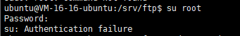

Ubuntu
账号密码
mkdir
ubuntu 10010?zhanglei
切换到root用户
su root
切换用户提示 Authentication failure(认证失败)

解决方案
sudo passwd root

安装nginx
apt-get install nginx
查看nginx是否安装成功
nginx -v
启动nginx
service nginx start
nginx文件位置
/usr/sbin/nginx：主程序/etc/nginx：存放配置文件/usr/share/nginx：存放静态文件/var/log/nginx：存放日志
nginx配置
查看nginx配置
cd /etc/nginx

修改静态资源路径
vim /etc/nginx/sites-enabled/default

其他配置待补充
XShell上传文件到Linux
安装rz、sz
sudo apt-get install lrzsz
输入rz，回车就可以选择需要上传的文件了
rz
安装yum
第一步：安装build-essential软件包
sudo apt-get install build-essential
第二步：安装yum
sudo apt-get install yum
删除文件
-r表示强制删除，-f表示不提示
强制删除文件夹并提示
sudo rm -r 文件夹名
强制删除文件夹不提示（最暴力）
sudo rm -rf 文件夹名
剪切文件
home下的test.txt移动到etc目录下
mv /home/test.txt /etc
home下所有文件移动到etc下
mv /home/* /etc
重命名文件
A文件重命名为B
mv A B
查看端口
查看8080端口
netstat -ap | grep 8080
kill进程
杀掉进程18703
kill -9 18703
测试网站服务
curl www.baidu.com
修改文件权限
修改文件所有者
文件拷贝
cp [选项] 源文件或目录 目标文件或目录
选项
| 选项 | 说明 |
|---|---|
| a | 该选项通常在拷贝目录时使用。它保留链接、文件属性，并递归地拷贝目录，其作用等于dpR选项的组合。 |
| d | 拷贝时保留链接。 |
| f | 删除已经存在的目标文件而不提示。 |
| i | i 和f选项相反，在覆盖目标文件之前将给出提示要求用户确认。回答y时目标文件将被覆盖，是交互式拷贝。 |
| p | 此时cp除复制源文件的内容外，还将把其修改时间和访问权限也复制到新文件中。 |
| r | 若给出的源文件是一目录文件，此时cp将递归复制该目录下所有的子目录和文件。此时目标文件必须为一个目录名。 |
| l | 不作拷贝，只是链接文件。 |
示例
cp -i /home/ftpdir/* /usr/share/nginx/html